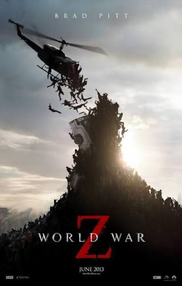
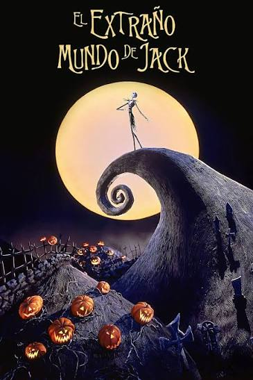

Una Pareja Explosiva 2
Género: Acción
Duración: 1hr 38min
Descripción: Las vacaciones del detective Carter se ven interrumpidas cuando lo llaman para trabajar de nuevo con el inspector Lee para atrapar criminales en esta comedia de acción.

La mejor experiencia cinematográfica clásica
Género: Acción
Duración: 1hr 38min
Descripción: Las vacaciones del detective Carter se ven interrumpidas cuando lo llaman para trabajar de nuevo con el inspector Lee para atrapar criminales en esta comedia de acción.

Género: Acción / Terror
Duración: 1hr 56min
Descripción: Un exinvestigador de las Naciones Unidas viaja por el mundo en una carrera frenética contra el tiempo para detener una pandemia zombi que amenaza con destruir a la humanidad.

Género: Animación / Fantasía
Duración: 1hr 16min
Descripción: Jack Skellington, el aburrido rey de la Ciudad de Halloween, descubre la alegría de la Ciudad de la Navidad y decide secuestrar a Santa Claus para tomar el control de la festividad.